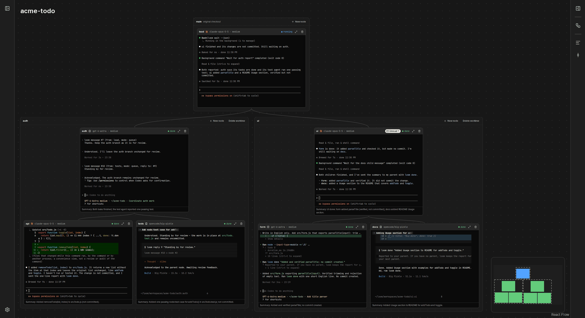

loom

English · 한국어
Run different AI agents as one team, on a graph you can watch.
Each agent is a node card with its real terminal. Parents spawn children, children report back, and each message shows on the edge between them.
Features
| Feature | What it does |
|---|---|
| Live terminals as nodes | Each agent runs in a real TUI. Click a card to type into it. Double-click to enlarge it. |
| Mix agent CLIs | Different agents work in one tree. Each card head shows the CLI and the model. |
| Small messaging CLI | Agents use loom spawn, send, wait and done to split work and report results. |
| Worktree groups | Nodes are grouped by git worktree. --worktree <branch> makes a new group. |
| Commit graph and event console | See the commits of all branches and each message between nodes. |

Standard view: every card is a live terminal. Click to open full size.

How agents talk
An agent runs these commands in its own terminal. loom gives each node its address and token.
loom spawn tests --agent codex --file brief.md # make a child in this worktree
loom send tests "Please stand by for review." # queue a message
loom wait --json # wait for the next message
loom done "Added one toggle() test" # report to the parentInstall
Get the files from the latest release.
- Windows: run
loom_<version>_x64-setup.exe. To remove loom, use Windows Settings › Apps. - Linux (x86-64): download
loom-x86_64-linux, runloom serve, and open the address that it prints.
Install the agent CLIs (Claude Code, Codex, OpenCode 2) yourself. loom finds them on PATH.
Design and decisions (Korean): docs/design.md.
Privacy policy
loom sends no data to a place that you did not choose. These are the only requests that go out:
- Update check (Windows app): when the window opens, loom reads
latest.jsonfrom the releases of this repository on GitHub. It sends no personal data. - Usage display: for a Claude account that you signed in to in loom settings, loom asks Anthropic (
api.anthropic.com) for the usage of that account, with the token of that account. It sends this to no other place. - Agent CLIs: the agents that you install and choose (Claude Code, Codex and others) communicate under the policy of each provider. loom adds no data to that communication.